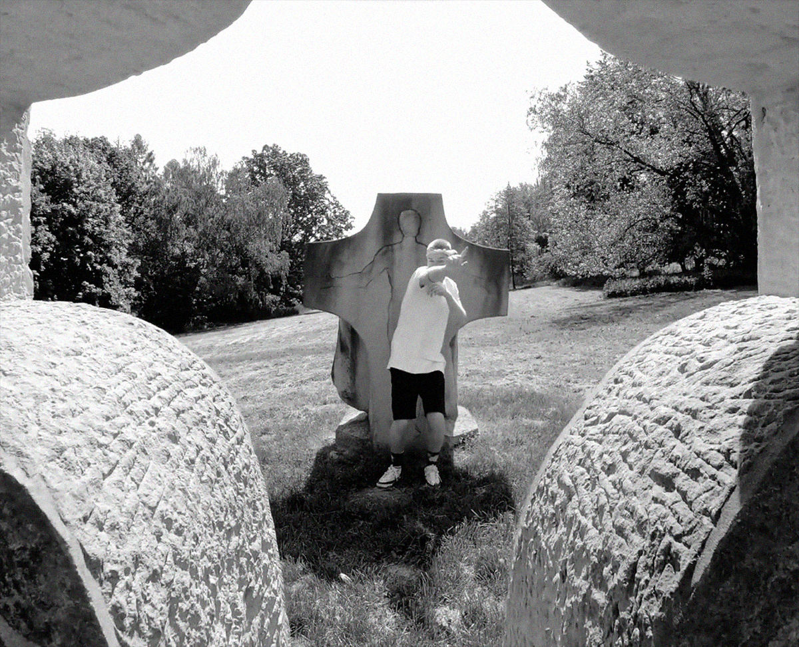

Short-form content,
hours-long video essays
and everything in between.
I can process long-form content like VODs or podcast captures into TikTok videos or Instagram Reels. Longer montages and compilations are also my field of expertise. Doesn't matter if it's Youtube, TikTok, or some niche platform, I'm going to get it done.
Like anything else, music needs visuals and marketing. I'm responsible for most of the videos of our music collective, XST.

A little sample of my editing from both
gaming and
music.